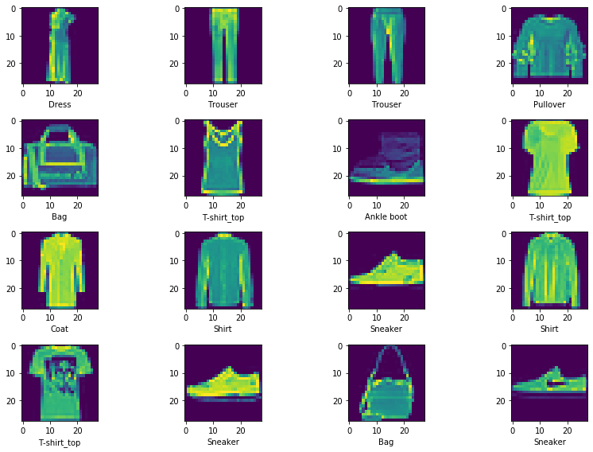
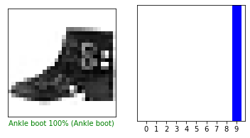

Copyright 2018 The TensorFlow Authors.
1 | # ATTENTION: Please do not alter any of the provided code in the exercise. Only add your own code where indicated |
Train Your Own Model and Convert It to TFLite
This notebook uses the Fashion MNIST dataset which contains 70,000 grayscale images in 10 categories. The images show individual articles of clothing at low resolution (28 by 28 pixels), as seen here:
|
|
|
Figure 1. Fashion-MNIST samples (by Zalando, MIT License). |
Fashion MNIST is intended as a drop-in replacement for the classic MNIST dataset—often used as the “Hello, World” of machine learning programs for computer vision. The MNIST dataset contains images of handwritten digits (0, 1, 2, etc.) in a format identical to that of the articles of clothing we’ll use here.
This uses Fashion MNIST for variety, and because it’s a slightly more challenging problem than regular MNIST. Both datasets are relatively small and are used to verify that an algorithm works as expected. They’re good starting points to test and debug code.
We will use 60,000 images to train the network and 10,000 images to evaluate how accurately the network learned to classify images. You can access the Fashion MNIST directly from TensorFlow. Import and load the Fashion MNIST data directly from TensorFlow:
Setup
1 | # TensorFlow |
• Using TensorFlow Version: 2.0.0
• GPU Device Found.
Download Fashion MNIST Dataset
We will use TensorFlow Datasets to load the Fashion MNIST dataset.
1 | splits = tfds.Split.ALL.subsplit(weighted=(80, 10, 10)) |
1 | sample = next(iter(train_examples)) |
1 | sample[0].shape |
TensorShape([28, 28, 1])
1 | sample[1] |
<tf.Tensor: id=490, shape=(), dtype=int64, numpy=6>
The class names are not included with the dataset, so we will specify them here.
1 | class_names = ['T-shirt_top', 'Trouser', 'Pullover', 'Dress', 'Coat', |
1 | # Create a labels.txt file with the class names |
1 | # The images in the dataset are 28 by 28 pixels. |
Preprocessing Data
Preprocess
1 | # EXERCISE: Write a function to normalize the images. |
1 | # Specify the batch size |
Create Datasets From Images and Labels
1 | # Create Datasets |
1 | batch_sample = next(iter(train_batches)) |
1 | tf.squeeze(batch_sample[0][0]).numpy() |
array([[0. , 0. , 0. , 0. , 0. ,
0. , 0. , 0. , 0. , 0. ,
0. , 0. , 0.16078432, 0.47843137, 0.3019608 ,
0.10588235, 0. , 0. , 0. , 0. ,
0. , 0. , 0. , 0. , 0. ,
0. , 0. , 0. ],
[0. , 0. , 0. , 0. , 0. ,
0. , 0. , 0. , 0. , 0. ,
0. , 0. , 0.46666667, 0.8509804 , 0.6666667 ,
0.63529414, 0.11372549, 0. , 0. , 0. ,
0. , 0. , 0. , 0. , 0. ,
0. , 0. , 0. ],
[0. , 0. , 0. , 0. , 0. ,
0. , 0. , 0. , 0. , 0. ,
0.13333334, 0.74509805, 0.98039216, 0.8117647 , 0.6156863 ,
0.62352943, 0.87058824, 0.40392157, 0.01568628, 0. ,
0. , 0. , 0. , 0. , 0. ,
0. , 0. , 0. ],
[0. , 0. , 0. , 0. , 0. ,
0. , 0. , 0. , 0. , 0. ,
0.4509804 , 0.99215686, 0.87058824, 0.7019608 , 0.57254905,
0.6666667 , 0.56078434, 0.49411765, 0.47058824, 0.11372549,
0. , 0. , 0. , 0. , 0. ,
0. , 0. , 0. ],
[0. , 0. , 0. , 0. , 0. ,
0. , 0. , 0. , 0. , 0. ,
0.3372549 , 0.8666667 , 0.76862746, 0.7019608 , 0.6901961 ,
0.57254905, 0.33333334, 0.49411765, 0.6039216 , 0.24705882,
0. , 0. , 0. , 0. , 0. ,
0. , 0. , 0. ],
[0. , 0. , 0. , 0. , 0. ,
0. , 0. , 0. , 0. , 0. ,
0.40392157, 0.78431374, 0.65882355, 0.7137255 , 0.58431375,
0.39215687, 0.29411766, 0.78431374, 0.39215687, 0. ,
0. , 0. , 0. , 0. , 0. ,
0. , 0. , 0. ],
[0. , 0. , 0. , 0. , 0. ,
0. , 0. , 0. , 0. , 0. ,
0.6039216 , 0.8 , 0.73333335, 0.78431374, 0.49019608,
0.3137255 , 0.38039216, 0.17254902, 0. , 0. ,
0. , 0. , 0. , 0. , 0. ,
0. , 0. , 0. ],
[0. , 0. , 0. , 0. , 0. ,
0. , 0. , 0. , 0. , 0. ,
0.26666668, 0.9019608 , 0.8117647 , 0.8392157 , 0.49019608,
0.38039216, 0.37254903, 0. , 0. , 0. ,
0. , 0. , 0. , 0. , 0. ,
0. , 0. , 0. ],
[0. , 0. , 0. , 0. , 0. ,
0. , 0. , 0. , 0. , 0. ,
0. , 0.7058824 , 0.58431375, 0.49019608, 0.4 ,
0.4509804 , 0.23529412, 0. , 0.00392157, 0.00392157,
0. , 0. , 0. , 0. , 0. ,
0. , 0. , 0. ],
[0. , 0. , 0. , 0. , 0. ,
0. , 0. , 0. , 0. , 0. ,
0.3137255 , 0.7176471 , 0.42745098, 0.42352942, 0.38039216,
0.45882353, 0.15686275, 0. , 0. , 0.01176471,
0. , 0. , 0. , 0. , 0. ,
0. , 0. , 0. ],
[0. , 0. , 0. , 0. , 0. ,
0. , 0. , 0. , 0. , 0. ,
0.62352943, 0.7372549 , 0.44705883, 0.40392157, 0.38039216,
0.44705883, 0.23921569, 0. , 0. , 0. ,
0. , 0. , 0. , 0. , 0. ,
0. , 0. , 0. ],
[0. , 0. , 0. , 0. , 0. ,
0. , 0. , 0. , 0. , 0. ,
0.85882354, 0.78039217, 0.44705883, 0.4117647 , 0.4 ,
0.4117647 , 0.4117647 , 0.03529412, 0. , 0.00392157,
0. , 0. , 0. , 0. , 0. ,
0. , 0. , 0. ],
[0. , 0. , 0. , 0. , 0. ,
0. , 0. , 0. , 0. , 0. ,
0.67058825, 0.8666667 , 0.54509807, 0.48235294, 0.43529412,
0.4117647 , 0.4 , 0.1254902 , 0. , 0.00392157,
0. , 0. , 0. , 0. , 0. ,
0. , 0. , 0. ],
[0. , 0. , 0. , 0. , 0. ,
0. , 0. , 0. , 0. , 0. ,
0.37254903, 0.9137255 , 0.6039216 , 0.54509807, 0.5058824 ,
0.53333336, 0.5372549 , 0.11372549, 0. , 0.00392157,
0. , 0. , 0. , 0. , 0. ,
0. , 0. , 0. ],
[0. , 0. , 0. , 0. , 0. ,
0. , 0. , 0. , 0. , 0. ,
0.4 , 0.89411765, 0.5254902 , 0.54509807, 0.5176471 ,
0.57254905, 0.65882355, 0.16078432, 0. , 0. ,
0. , 0. , 0. , 0. , 0. ,
0. , 0. , 0. ],
[0. , 0. , 0. , 0. , 0. ,
0. , 0. , 0. , 0. , 0. ,
0.53333336, 0.8901961 , 0.5254902 , 0.54509807, 0.5176471 ,
0.57254905, 0.56078434, 0.16078432, 0. , 0. ,
0. , 0. , 0. , 0. , 0. ,
0. , 0. , 0. ],
[0. , 0. , 0. , 0. , 0. ,
0. , 0. , 0. , 0. , 0. ,
0.64705884, 0.8784314 , 0.49411765, 0.56078434, 0.48235294,
0.6039216 , 0.6156863 , 0.14509805, 0. , 0.00392157,
0. , 0. , 0. , 0. , 0. ,
0. , 0. , 0. ],
[0. , 0. , 0. , 0. , 0. ,
0. , 0. , 0. , 0. , 0. ,
0.8156863 , 0.8784314 , 0.5058824 , 0.6156863 , 0.48235294,
0.6039216 , 0.6039216 , 0.16078432, 0. , 0.00392157,
0. , 0. , 0. , 0. , 0. ,
0. , 0. , 0. ],
[0. , 0. , 0. , 0. , 0. ,
0. , 0. , 0. , 0. , 0. ,
0.9372549 , 0.84705883, 0.49411765, 0.6784314 , 0.45882353,
0.68235296, 0.627451 , 0.21176471, 0. , 0.00392157,
0. , 0. , 0. , 0. , 0. ,
0. , 0. , 0. ],
[0. , 0. , 0. , 0. , 0. ,
0. , 0. , 0. , 0. , 0. ,
0.95686275, 0.8392157 , 0.49411765, 0.7176471 , 0.47058824,
0.68235296, 0.6156863 , 0.23529412, 0. , 0.00392157,
0. , 0. , 0. , 0. , 0. ,
0. , 0. , 0. ],
[0. , 0. , 0. , 0. , 0. ,
0. , 0. , 0. , 0. , 0.06666667,
0.9019608 , 0.8392157 , 0.47058824, 0.7490196 , 0.49019608,
0.75686276, 0.6039216 , 0.27058825, 0. , 0. ,
0. , 0. , 0. , 0. , 0. ,
0. , 0. , 0. ],
[0. , 0. , 0. , 0. , 0. ,
0. , 0. , 0. , 0. , 0.14509805,
0.8352941 , 0.8784314 , 0.46666667, 0.78039217, 0.54901963,
0.78039217, 0.57254905, 0.30588236, 0. , 0. ,
0. , 0. , 0. , 0. , 0. ,
0. , 0. , 0. ],
[0. , 0. , 0. , 0. , 0. ,
0. , 0. , 0. , 0. , 0.22352941,
0.8235294 , 0.99215686, 0.47058824, 0.8 , 0.58431375,
0.7921569 , 0.54901963, 0.34901962, 0. , 0. ,
0. , 0. , 0. , 0. , 0. ,
0. , 0. , 0. ],
[0. , 0. , 0. , 0. , 0. ,
0. , 0. , 0. , 0. , 0.28235295,
0.75686276, 1. , 0.48235294, 0.76862746, 0.6156863 ,
0.7921569 , 0.5568628 , 0.36078432, 0. , 0. ,
0. , 0. , 0. , 0. , 0. ,
0. , 0. , 0. ],
[0. , 0. , 0. , 0. , 0. ,
0. , 0. , 0. , 0. , 0.36862746,
0.73333335, 0.8901961 , 0.5058824 , 0.7254902 , 0.68235296,
0.77254903, 0.54509807, 0.4117647 , 0. , 0. ,
0. , 0. , 0. , 0. , 0. ,
0. , 0. , 0. ],
[0. , 0. , 0. , 0. , 0. ,
0. , 0. , 0. , 0. , 0.49019608,
0.6901961 , 0.90588236, 0.5372549 , 0.6392157 , 0.7058824 ,
0.85882354, 0.56078434, 0.42745098, 0. , 0. ,
0. , 0. , 0. , 0. , 0. ,
0. , 0. , 0. ],
[0. , 0. , 0. , 0. , 0. ,
0. , 0. , 0. , 0. , 0.627451 ,
0.78039217, 0.9137255 , 0.827451 , 0.6509804 , 0.91764706,
0.69411767, 0.6 , 0.48235294, 0. , 0. ,
0. , 0. , 0. , 0. , 0. ,
0. , 0. , 0. ],
[0. , 0. , 0. , 0. , 0. ,
0. , 0. , 0. , 0. , 0. ,
0. , 0.04705882, 0.34901962, 0.24705882, 0.11764706,
0.18431373, 0.77254903, 0.29411766, 0. , 0. ,
0. , 0. , 0. , 0. , 0. ,
0. , 0. , 0. ]], dtype=float32)
1 | batch_sample[1][0].numpy().argmax() |
3
1 | def show_batch(x,y,shape = None): |
1 | show_batch(batch_sample[0],batch_sample[1], (4,4)) |

Building the Model
1 | Model: "sequential" |
1 | # EXERCISE: Build and compile the model shown in the previous cell. |
1 | model.summary() |
Model: "sequential_1"
_________________________________________________________________
Layer (type) Output Shape Param #
=================================================================
conv2d_2 (Conv2D) (None, 26, 26, 16) 160
_________________________________________________________________
max_pooling2d_1 (MaxPooling2 (None, 13, 13, 16) 0
_________________________________________________________________
conv2d_3 (Conv2D) (None, 11, 11, 32) 4640
_________________________________________________________________
flatten_1 (Flatten) (None, 3872) 0
_________________________________________________________________
dense_2 (Dense) (None, 64) 247872
_________________________________________________________________
dense_3 (Dense) (None, 10) 650
=================================================================
Total params: 253,322
Trainable params: 253,322
Non-trainable params: 0
_________________________________________________________________
Train
1 | history = model.fit(train_batches, epochs=10, validation_data=validation_batches) |
Epoch 1/10
219/219 [==============================] - 148s 675ms/step - loss: 0.5912 - accuracy: 0.7919 - val_loss: 0.0000e+00 - val_accuracy: 0.0000e+00
Epoch 2/10
219/219 [==============================] - 4s 20ms/step - loss: 0.3837 - accuracy: 0.8648 - val_loss: 0.3390 - val_accuracy: 0.8796
Epoch 3/10
219/219 [==============================] - 4s 20ms/step - loss: 0.3319 - accuracy: 0.8819 - val_loss: 0.3046 - val_accuracy: 0.8914
Epoch 4/10
219/219 [==============================] - 4s 20ms/step - loss: 0.3014 - accuracy: 0.8925 - val_loss: 0.2903 - val_accuracy: 0.8957
Epoch 5/10
219/219 [==============================] - 4s 20ms/step - loss: 0.2805 - accuracy: 0.8993 - val_loss: 0.2841 - val_accuracy: 0.9011
Epoch 6/10
219/219 [==============================] - 4s 20ms/step - loss: 0.2602 - accuracy: 0.9054 - val_loss: 0.2777 - val_accuracy: 0.9009
Epoch 7/10
219/219 [==============================] - 4s 20ms/step - loss: 0.2477 - accuracy: 0.9101 - val_loss: 0.2548 - val_accuracy: 0.9091
Epoch 8/10
219/219 [==============================] - 4s 20ms/step - loss: 0.2351 - accuracy: 0.9144 - val_loss: 0.2703 - val_accuracy: 0.9000
Epoch 9/10
219/219 [==============================] - 4s 20ms/step - loss: 0.2209 - accuracy: 0.9198 - val_loss: 0.2462 - val_accuracy: 0.9126
Epoch 10/10
219/219 [==============================] - 4s 20ms/step - loss: 0.2108 - accuracy: 0.9243 - val_loss: 0.2566 - val_accuracy: 0.9089
Exporting to TFLite
You will now save the model to TFLite. We should note, that you will probably see some warning messages when running the code below. These warnings have to do with software updates and should not cause any errors or prevent your code from running.
1 | # EXERCISE: Use the tf.saved_model API to save your model in the SavedModel format. |
WARNING:tensorflow:From /usr/local/lib/python3.6/dist-packages/tensorflow_core/python/ops/resource_variable_ops.py:1781: calling BaseResourceVariable.__init__ (from tensorflow.python.ops.resource_variable_ops) with constraint is deprecated and will be removed in a future version.
Instructions for updating:
If using Keras pass *_constraint arguments to layers.
WARNING:tensorflow:From /usr/local/lib/python3.6/dist-packages/tensorflow_core/python/ops/resource_variable_ops.py:1781: calling BaseResourceVariable.__init__ (from tensorflow.python.ops.resource_variable_ops) with constraint is deprecated and will be removed in a future version.
Instructions for updating:
If using Keras pass *_constraint arguments to layers.
INFO:tensorflow:Assets written to: saved_model/1/assets
INFO:tensorflow:Assets written to: saved_model/1/assets
1 | # Select mode of optimization |
1 | # EXERCISE: Use the TFLiteConverter SavedModel API to initialize the converter |
1 | tflite_model_file = pathlib.Path('./model.tflite') |
258704
Test the Model with TFLite Interpreter
1 | # Load TFLite model and allocate tensors. |
1 | # Gather results for the randomly sampled test images |
1 | class_names |
['T-shirt_top',
'Trouser',
'Pullover',
'Dress',
'Coat',
'Sandal',
'Shirt',
'Sneaker',
'Bag',
'Ankle boot']
1 | # Utilities functions for plotting |
1 | # Visualize the outputs |

Other Comfiguration example
Post-Training Quantization
The simplest form of post-training quantization quantizes weights from floating point to 8-bits of precision. This technique is enabled as an option in the TensorFlow Lite converter. At inference, weights are converted from 8-bits of precision to floating point and computed using floating-point kernels. This conversion is done once and cached to reduce latency.
To further improve latency, hybrid operators dynamically quantize activations to 8-bits and perform computations with 8-bit weights and activations. This optimization provides latencies close to fully fixed-point inference. However, the outputs are still stored using floating point, so that the speedup with hybrid ops is less than a full fixed-point computation.
1 | converter.optimizations = [tf.lite.Optimize.DEFAULT] |
Post-Training Integer Quantization
We can get further latency improvements, reductions in peak memory usage, and access to integer only hardware accelerators by making sure all model math is quantized. To do this, we need to measure the dynamic range of activations and inputs with a representative data set. You can simply create an input data generator and provide it to our converter.
1 | def representative_data_gen(): |
The resulting model will be fully quantized but still take float input and output for convenience.
Ops that do not have quantized implementations will automatically be left in floating point. This allows conversion to occur smoothly but may restrict deployment to accelerators that support float.
Full Integer Quantization
To require the converter to only output integer operations, one can specify:
1 | converter.target_spec.supported_ops = [tf.lite.OpsSet.TFLITE_BUILTINS_INT8] |